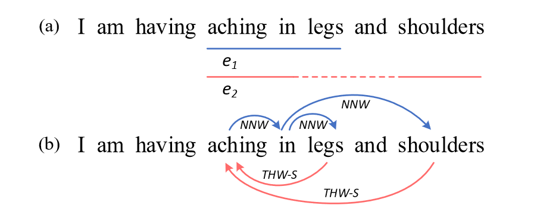
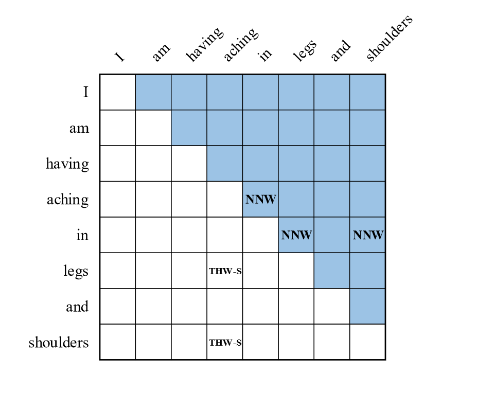
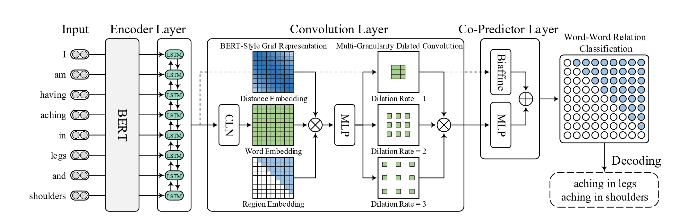
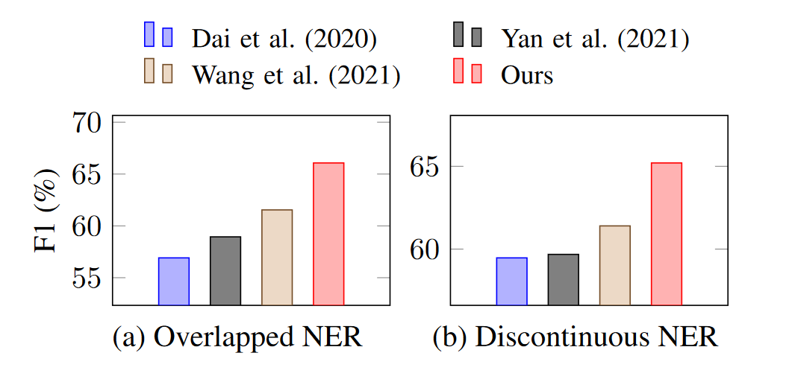
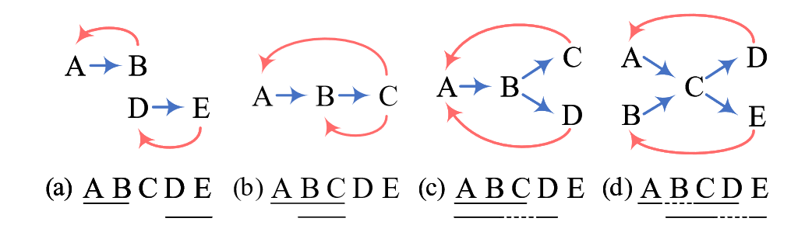

Notes for Paper: Unified Named Entity Recognition as Word-Word Relation Classification
论文笔记主要记录和分析论文动机和思想，不对具体方法的细节和实验做讨论
Background:
现有的NER问题可以大致分成三种：
- 简单实体(flat)，实体的构成比较简单，只识别出实体的开始和结束位置即可；
- 重叠(嵌套)实体(overlapped)，会出现多个实体包含相同的token的情况；
- 不连续实体(discontinuous)，实体由位置上不相邻的token构成。
如图1所示，在(a)中的实体就是简单实体，而
则是不连续实体。又因为这两个实体同时出现在同一个句子中，并且有相互重叠的部分，即aching in，因此它们又是重叠的实体。

现有的NER方法大致可分为四种：
-
序列标注方法，简单来讲就是对每个token分配一个标签，以识别每个token在一个实体中扮演的角色。如图1中的
，我们可以将aching in legs分别标为BIE，以表示他们为开始、中间和结束。虽然这种方式简单直观，但是缺陷也很明显，即出现重叠和非连续实体时，简单的标签就无法完成任务了，并且还需要仔细地设计多种标签，复杂度非常高，也不利于解码；
-
基于超图的方法，既然标注法对一个token只能分配一个标签，那么利用节点和边的特点(一个节点可以有多个边)来表示所有的实体span，在一定程度上缓解了标注法的实体嵌套问题，
但推理时会受到虚假结构和结构模糊性问题的影响(原文如此说，因为还没读过相关方法的论文，没有理解，暂时划掉)； -
序列生成的方法：既然标注很麻烦，那干脆利用Seq2Seq的方式，直接生成实体，这样会不受嵌套和不连续的影响，但是会受到解码效率和偏差暴露的影响；
-
基于span的方法：一般可以列举所有可能的span，然后对span进行分类，但这种方式不仅会受到span的长度限制，还会因为枚举造成大量的资源消耗。
Motivation：
本文认为，上述方法的核心其实还是在寻找实体的边界，这种思想也许在解决某一个具体问题上有效，但如果想同时解决三种实体识别的问题，也就是建立一个统一的NER模型，那就不能仅仅只看实体的边界了。
因此，本文认为这种统一模型的主要瓶颈在于如何建模好单词之间的相邻关系，因为只确定边界只是确定了实体的大致范围，至于词之间的关系：是复用的还是不相邻的？需要用其他方式来表示。
所以本文提出了自己的方法W2NER，该方法主要对词之间的两类关系，准确地说是三类关系进行建模，即：
- None:无关系；
- NNW(Next-Neighboring-Word)：下一个邻接词；
- THW-*:(Tail-Head-Word-*): 头尾词，*表示实体类型
简单来说，THW确定了所有可能的实体边界，NNW确定了实体边界里面的各词之间的关系。如图2所示:
- THW-S确定了两个S(Symptom)类型的实体范围，(从尾找到头)：aching in legs 和 aching in legs and shoulders；
- NNW确定了词之间的关系，即当前单词的下一个词是谁，可以看到in和and并没有NNW关系，所以在两个实体范围中，只能解码出:aching in legs和aching in shoulders两个实体，而这样恰好解决了不连续的问题。

这种思想也可以结合图2和图1(b)来直观地感受。
Model and Experiment:
本文使用了Bert和LSTM作为编码器，利用卷积层提取词之间的表示，最后利用双仿射和多层感知机联合分类出词之间的关系。模型总体结构如图3所示：

使用卷积层的目的非常直观，因为本文建模的方式就是表的形式，而CNN相对也很适合处理这种结构的表示。在卷积层中，使用了条件层归一化操作(Conditional Layer Normalization)，论文认为这样能够有效产生词对的网格(表)的表示；之后利用类似Bert的方式，增加了词的位置信息和表格的区域信息；最后，使用不同的空洞卷积以捕获不同词距离之间的交互信息。
在完成上面对表格的表示refine后，论文使用联合的预测器进行最后的token标记分类。因为原文提到先前的工作验证了MLP和biaffine联合使用有利于关系分类。
具体的实验内容可见原文，这里以ShARe14数据集为例，如下图，可见W2NER模型在重叠和不连续场景长的确都取得了明显的性能提升。

Decode Strategy:
解码的基本思想是利用词之间的关系来确定词和词之间的路径，文中以四个示例来展示解码的具体操作：
需要注意的是，图中的下方文字，划线的是具体的实体，大写字母代表了实体中的词。而图中的蓝线表示NNW关系，红色的线表示THW关系。

- 有两个实体AB和DE，属于简单实体，因此直接就能解码出来；
- 有重叠的实体：ABC和BC，但因为ABC和BC均有THW关系，因此也可以解码除了；
- 有重叠和不连续的实体：ABC和ABD，除了利用THW关系来解决重叠问题外，NNW也从B直接关联到D，从而识别出了不连续的ABD实体；
- 比较复杂的实体：ACD和BCE，和上面不同的在于，有可能出现ACE和BCD的路径，但是通过THW的限制，使得这两种情况被排除。
Thinking:
本文的动机、对应解决方法和解码策略都非常自然，需要注意的是：
- 并非所有表格表示的东西都适合CNN，如果token的分类和其他token没有太多直接的关系，那么使用CNN不一定会有正向的作用；当然，本文中因为NNW关系本就需要邻近token的信息，所以非常适合，但是核不易太大；
- 这种方法可以迁移到关系提取(联合提取)上，但是重叠的类型会更多，并且会引入超出实体级别的关系。如果依旧保留NNW这样的关系，可能造成模型学习的负担，并且很容易和其他标签重叠，因此必然需要进一步的修改标签和编码方式。
Personal blog, please do not repost.
Author: abel-neko